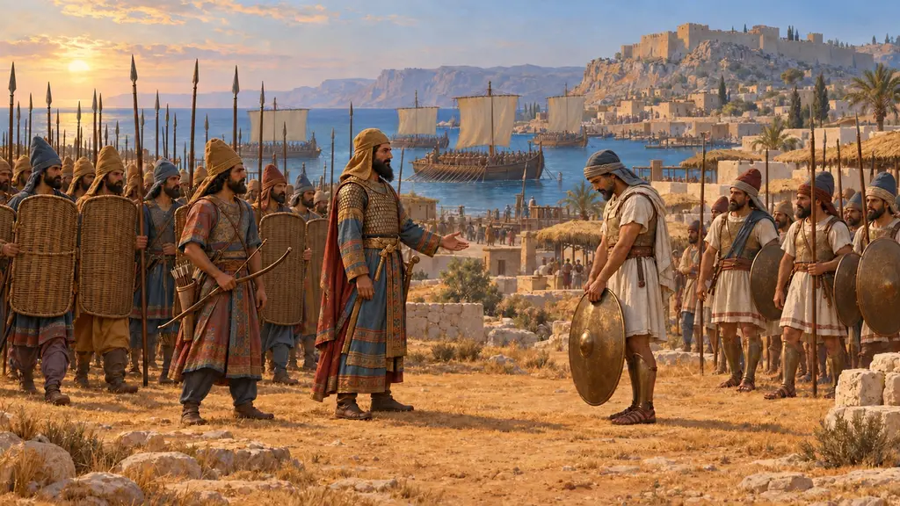
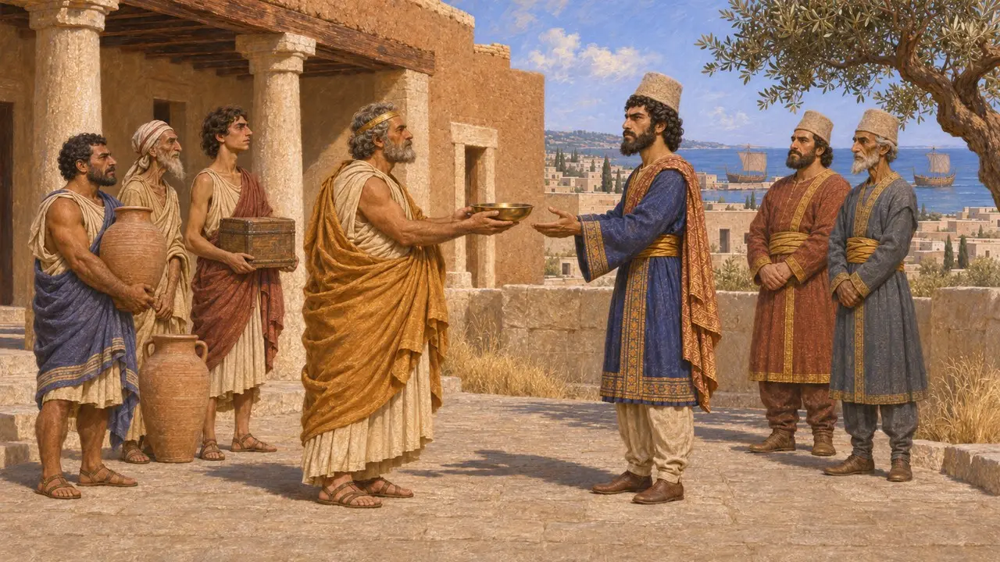
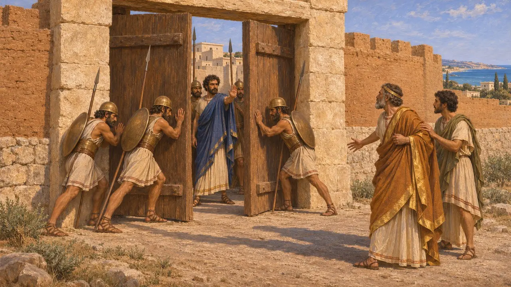
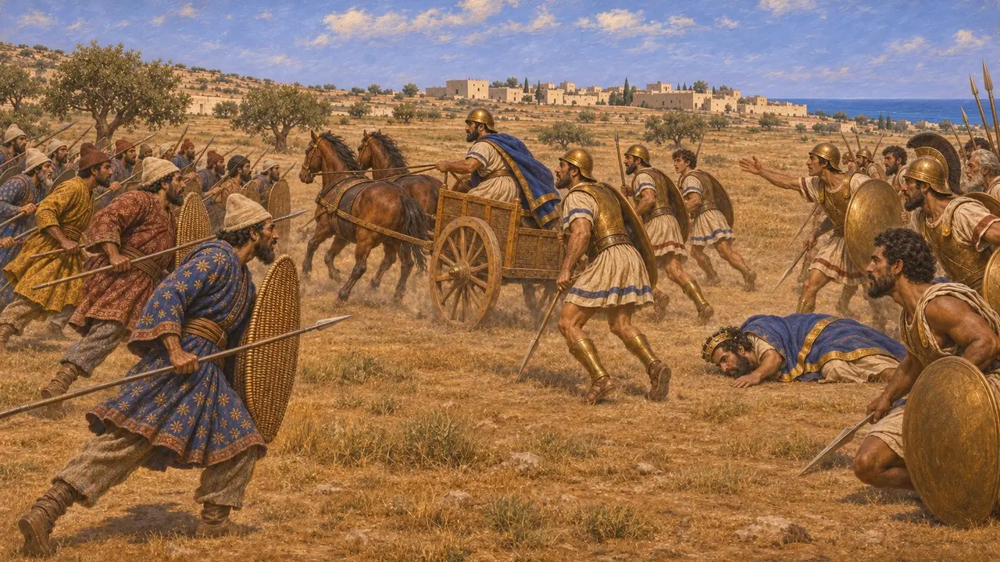
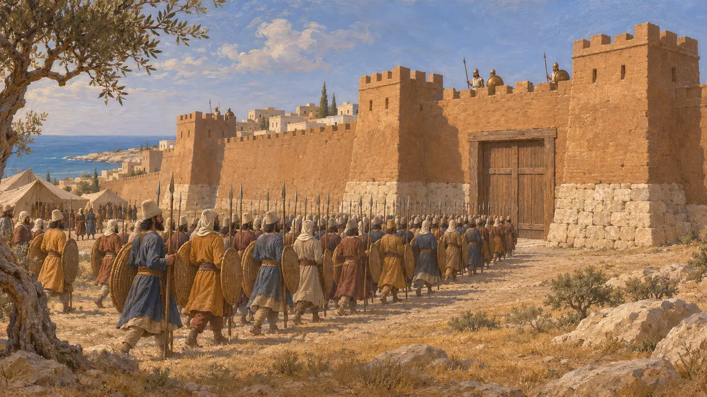
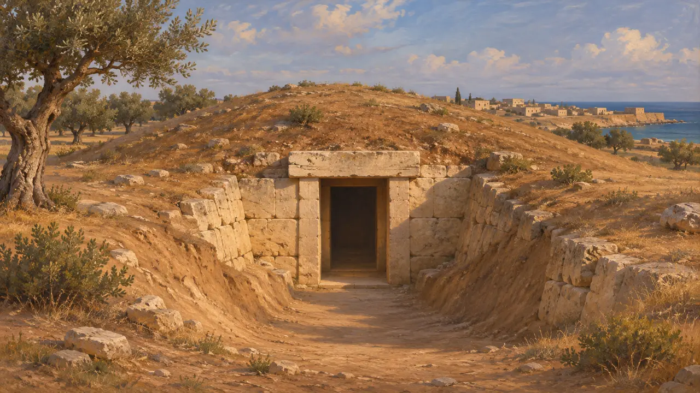

살라미스(키프로스)
키프로스 동부 해안에 있던 그리스어 사용 왕도. 기원전 497년경 지상전이 벌어진 곳
살라미스는 키프로스 동부에서 가장 큰 그리스 도시였으며, 이오니아 반란 당시 페르시아에 맞선 키프로스 반란을 이끈 오네실로스의 근거지였다. 헤로도토스는 이 반란의 결정적인 지상 전투가 도시 옆 평원에서 벌어졌다고 전한다. 게임은 이곳을 오네실로스의 도시라고 부르지만, 헤로도토스에 따르면 그는 당시 통치하던 왕이자 자신의 형제인 고르고스에게서 이 도시를 빼앗았다.
게임에서: 살라미스는 키프로스 반란과 이오니아 반란을 다루는 사건 문서에 등장한다. 이곳에는 고유한 게임 메커니즘이 없다. 게임은 이곳을 오네실로스의 도시로 제시하는데, 이는 오네실로스가 고르고스에게서 도시를 빼앗았다는 헤로도토스의 이야기를 단순화한 것이다.

페르시아 지배 아래 있는 키프로스의 도시
고대의 전승헤로도토스에 따르면 키프로스인은 캄비세스에게 스스로 귀속하여 페르시아의 지배 아래 들어갔고, 다리우스의 공물 구역에 포함되었다. 그는 이오니아 반란이 시작되었을 때 살라미스의 왕이 고르고스였다고 적고 있다.
Herodotus 3.19, 3.91, 5.104

오네실로스가 도시를 장악하다
고대의 전승헤로도토스에 따르면 고르고스의 동생 오네실로스는 형에게 이오니아인과 함께 반란에 가담하자고 재촉했다. 고르고스가 거절하자 오네실로스는 그를 도시 밖으로 내쫓고 권력을 잡았으며, 고르고스는 페르시아인에게 넘어갔다. 헤로도토스는 아마투스를 제외한 키프로스 전체가 반란에 가담했다고 말한다.
Herodotus 5.104-5.105

평원의 지상전
고대의 전승헤로도토스에 따르면 페르시아 군대는 킬리키아에서 바다를 건넜고, 그동안 페니키아 함대는 키프로스로 돌아 항해했다. 이오니아인은 바다에서 페니키아인을 무찔렀으나, 육지에서는 페르시아인이 살라미스 평원 가까이에서 승리를 거두었다. 그는 오네실로스가 전투 중에 죽었으며, 쿠리온 부대의 이탈과 살라미스 전차대의 이탈이 그날의 승패를 갈랐다고 전한다.
Herodotus 5.108-5.113

그 후의 일
고대의 전승헤로도토스에 따르면 페르시아인은 반란을 일으킨 도시들을 하나씩 포위했고, 반란이 시작된 지 1년 안에 섬 전체를 다시 지배 아래 두었다. 키프로스에 관한 그의 서술은 거기서 끝나며, 살라미스에 대해서는 더 이상 아무 말도 하지 않는다.
Herodotus 5.115-5.116

이야기 읽기
분쟁 중헤로도토스는 키프로스 반란에 관한 유일한 연속된 사료이며, 그리스인의 관점에서 글을 쓴다. 현대 역사가들은 대체로 큰 줄거리는 받아들이지만, 쿠리온에서의 배반이나 정확한 연대 같은 세부 사항을 두고는 논쟁한다. 살라미스(키프로스)의 발굴에서 기원전 8~7세기의 풍부한 무덤이 드러났으나, 그곳의 어떤 것도 전투에 관한 서술을 뒷받침하지는 않는다.
P. Briant, From Cyrus to Alexander, 2002
출처
- Herodotus 5.104-5.105
- Herodotus 5.108-5.116
- Herodotus 3.19
- Herodotus 3.91
- P. Briant, From Cyrus to Alexander, 2002